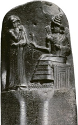

Actividad de lectura
En época de Hammurabi, rey de Babilonia, (1750 a. C.), se redactó el primer código de leyes conocido: el Código de Hammurabi o Ley del Talión (“Ojo por ojo, diente por diente”).
Tras leer el texto, explica por qué surge la escritura.
Lectura facilitada
Si un hombre:
- Acusa a otro hombre de homicidio sin tener pruebas, será ajusticiado.
- Ha cometido un robo (…) será ajusticiado.
- Pega a su padre, le será cortada la mano.
- Arranca un ojo al hijo de otro hombre, le será arrancado un ojo.
El ciudadano que tenga un asunto con la justicia (…) deberá hacerse leer el texto de este código (…). Él sabrá entonces a qué sentencia debe atenerse.
Código de Hammurabi, 1750 a. C. (Adaptación)
Apoyo visual

Código de Hammurabi (CC0)